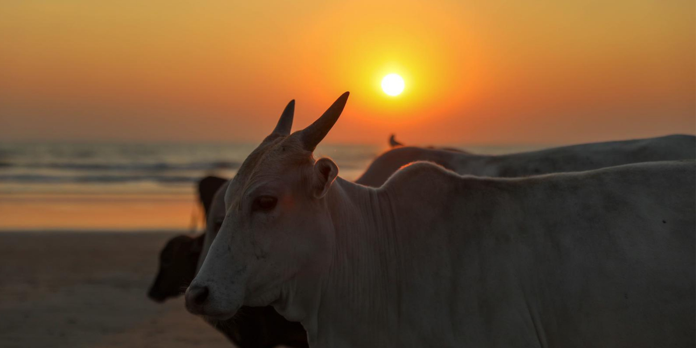
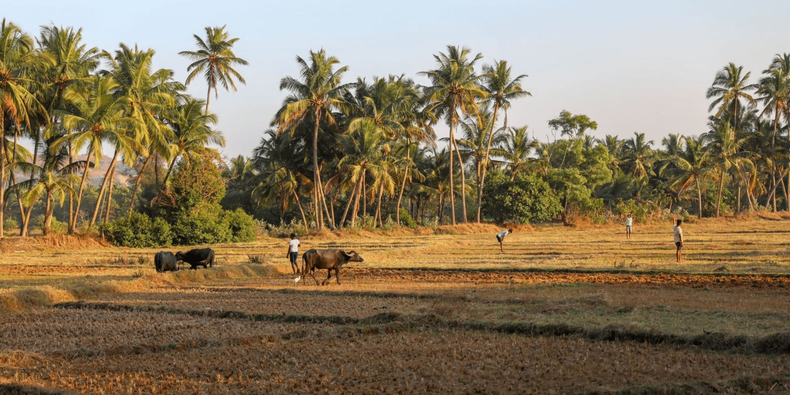
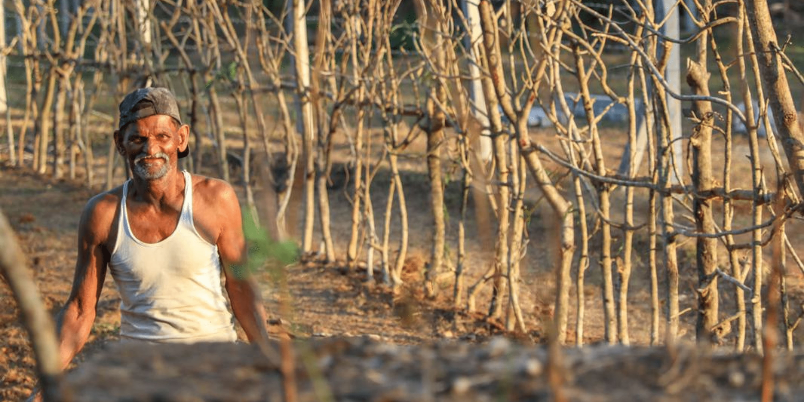

"Such a sense does not exist anywhere else in India, or, indeed, anywhere else in the world."
-Maria Aurora Cuto



When Portuguese general Albuquerque captured Goa in 1510, a 450-year long cultural exchange began, the longest rule of any European power in India. The Catholic influence of the Portuguese has built upon the indigenous Konkan culture, leading to a blend of European ideas and Indian tradition. Now known as a coastal oasis, the peaceful land of susegad, Goa is the ideal tourist destination for anyone from the busy Delhite to the laid-back European. A deep and complex heritage lies beyond the tourist brochure, revealing a Goa where the humble serenity of village life exists in harmony with the eager rush of modern-day, where the ancestry of this serene state is pervasive in the unwavering mango trees that have remained rooted for centuries.